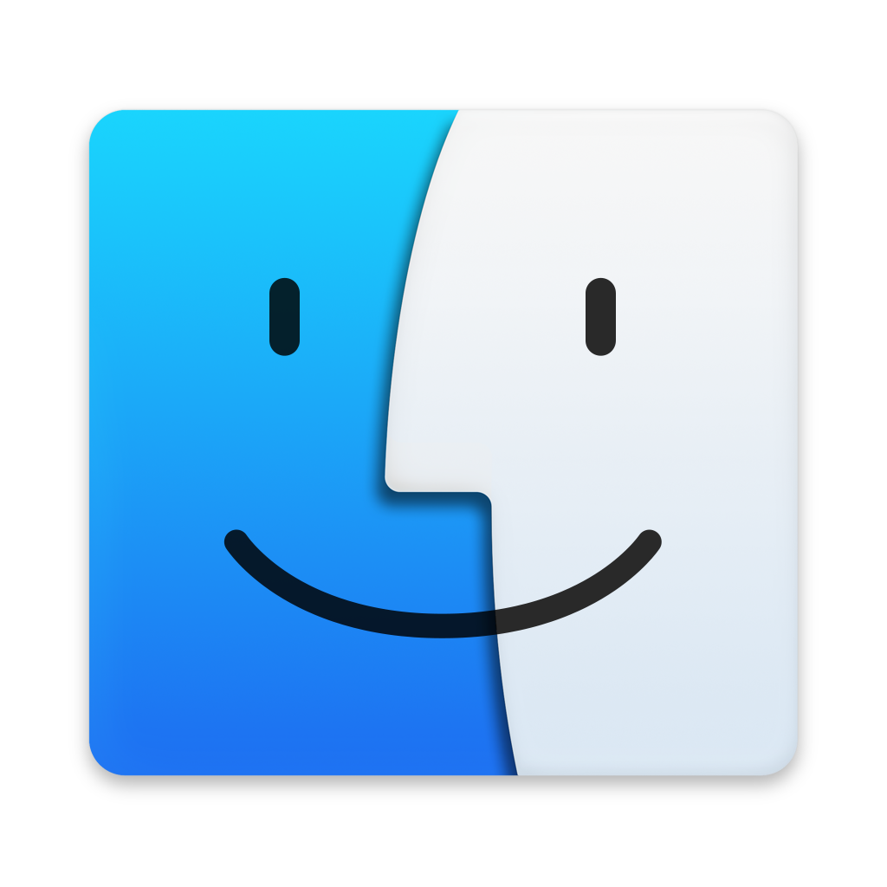

Price: Free
Avaible Platforms:
Minimum macOS version required: Catalina (10.15)
For Windows and Linux
Mount DMG and open the VMWare Fusion Installer
Follow the steps for installing VMWare Fusion
Once installed, go to settings, go to Privacy & Security, Accessibility and add/enable VMWare Fusion
Well the steps are the same as Workstation Pro, click on File -> New Virtual Machine
You will have to select the installation disc, that can be throgh a real disc, by selecting the drive letter, an iso file or you can choose set the iso in another time
Now VMWare can automatically detect the os from the iso or if you choosed to not using and installation disc, you can select the OS to install.
Now you'll have to create the virtual disk, you can chiise the size, VMWare assigns automatically the size of the disk in base of the os you selected
The VM creation is complete. If you want to set the amount of GB of RAM and/or the CPU cores to virtualize, you have to go to the VM settings
Once you booted and installed the OS, from the VMWare menu select VM -> Install VMWare Tools, this will mount a disk on your os with drivers for make the VM works
If you have this issue when you try to start a VM, also if is a new one, the problem is that the SIP (Sistem Integrity Protection) is blocking the MV execution for resolve this, you have to disable it, see here how to do